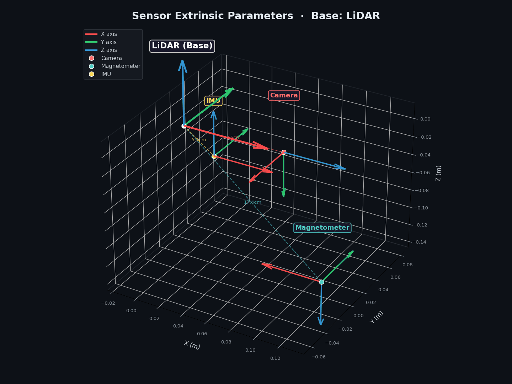

The first robotics-oriented benchmark for geomagnetic-aware SLAM with structured repeated-traversal trajectories
Continuous tri-axis magnetic field measurements (Mx, My, Mz) captured as a function of time along spatial trajectories, enabling joint spatial–temporal magnetic field analysis.
Seven sequences recorded over identical paths enable systematic investigation of magnetic repeatability, heading-dependent variation at identical spatial locations, and the quantitative impact of geomagnetic cues on yaw drift mitigation.
Paired daytime and nighttime sessions allow controlled analysis of heading robustness under illumination transitions—a scenario absent from existing magnetic-aware benchmarks.
Precise 6-DoF ground truth poses generated by registering LiDAR scans against a high-accuracy reference map via ICP, with static validation showing standard deviation below 3 cm.
Circular and rectangular paths with mild elevation changes around the campus provide structured outdoor benchmarking suited for global heading and loop-closure evaluation.
Hardware-synchronized LiDAR, camera, IMU, magnetometer, and GPS streams timestamped to a common system clock, with temporal offsets calibrated by minimizing angular velocity residuals.
| Sensor | Model | Rate | Specifications |
|---|---|---|---|
| 📷 Camera | Gemini 336L | 30 Hz | Depth 1280×800, H90°/V65°; RGB 1280×800, H94°/V68° |
| 🔵 LiDAR | Mid-360 | 10 Hz | 360°/59° FOV; 200k pts/s; 70 m range |
| 📐 IMU | Mid-360 (built-in) | 200 Hz | 3-axis Gyroscope; 3-axis Accelerometer |
| 🧲 Magnetometer | 3DM-GX5-AHRS | 100 Hz | 3-axis; ±8 Gauss; Temperature compensated |
| 🛰️ GPS | EVK-F9P | 1 Hz | Multi-band GNSS receiver; Operated in standalone mode (~meter-level accuracy) |
All transformations are defined with LiDAR as the base frame · Tlidar←sensor

RGB axes = XYZ · Dashed lines indicate sensor offsets from LiDAR origin
# ============================================================== # Sensor Extrinsic Parameters (Base Frame: LiDAR) # ============================================================== # 1. Camera → LiDAR T_lidar_camera: [ 0.0062967, 0.0002136, 0.9999802, 0.0720748, -0.9999516, 0.0075562, 0.0062949, 0.0193199, -0.0075547, -0.9999714, 0.0002611, -0.0151779, 0.0, 0.0, 0.0, 1.0 ] # 2. Magnetometer → LiDAR T_lidar_mag: [ -1.0, 0.0, 0.0, 0.115, 0.0, 1.0, 0.0, 0.0, 0.0, 0.0, -1.0, -0.13, 0.0, 0.0, 0.0, 1.0 ] # 3. IMU → LiDAR (Livox Mid-360 Factory Spec) T_lidar_imu: [ 1.0, 0.0, 0.0, 0.011, 0.0, 1.0, 0.0, 0.02329, 0.0, 0.0, 1.0, -0.04412, 0.0, 0.0, 0.0, 1.0 ]
14 sequences · 3 environments · day & night · forward & reverse traversals
| Sequence | Env. | Light | Direction | Path (m) | Duration (s) |
|---|---|---|---|---|---|
| Campus | |||||
| campus_day_fwd_01 | Campus | ☀️ Day | → Fwd | 1382.9 | 1203.8 |
| campus_day_fwd_04 | Campus | ☀️ Day | → Fwd | 1554.1 | 1291.9 |
| campus_day_fwd_08 | Campus | ☀️ Day | → Fwd | 1465.6 | 1181.2 |
| campus_day_fwd_09 | Campus | ☀️ Day | → Fwd | 1443.6 | 1132.3 |
| campus_day_rev_05 | Campus | ☀️ Day | ← Rev | 1637.2 | 1299.1 |
| campus_day_rev_07 | Campus | ☀️ Day | ← Rev | 1605.3 | 1234.9 |
| campus_night_fwd_00 | Campus | 🌙 Night | → Fwd | 1376.6 | 1117.3 |
| campus_night_rev_11 | Campus | 🌙 Night | ← Rev | 1527.3 | 1224.4 |
| Circle | |||||
| circle_day_fwd_rev_02 | Circle | ☀️ Day | ↔ Fwd+Rev | 1119.1 | 822.1 |
| circle_day_fwd_rev_06 | Circle | ☀️ Day | ↔ Fwd+Rev | 987.5 | 763.0 |
| circle_day_fwd_rev_10 | Circle | ☀️ Day | ↔ Fwd+Rev | 1402.8 | 993.2 |
| circle_night_fwd_rev_00 | Circle | 🌙 Night | ↔ Fwd+Rev | 1064.4 | 816.9 |
| Library | |||||
| library_day_fwd_03 | Library | ☀️ Day | → Fwd | 189.5 | 163.3 |
| Campus + Circle | |||||
| campus_circle_night_rev_12 | Campus+Circle | 🌙 Night | ← Rev | 1676.0 | 1406.2 |
| Year | Dataset | Seq. | Avg. Length | Mag. | Day/Night | Precise GT |
|---|---|---|---|---|---|---|
| 2013 | KITTI | 22 | ~2 km | ✗ | ✓ | ✓ |
| 2016 | EuRoC | 11 | ~80 m | ✗ | ✗ | ✓ |
| 2017 | RobotCar | 100+ | ~10 km | ✗ | ✓ | ✓ |
| 2017 | MagPIE | 10 | ~500 m | ✓ | ✗ | ✓ |
| 2018 | TUM VI | 28 | ~200 m | ✗ | ✗ | ✓ |
| 2020 | Newer College | 4 | ~1.5 km | ✗ | ✓ | ✓ |
| 2021 | MagWi | 100+ | Indoor multi-floor | ✓ | ✓ | ✗ |
| 2023 | Boreas | 40+ | ~8 km | ✗ | ✓ | ✓ |
| 2025 | GrandTour | 49 | >10 km | ✗ | ✓ | ✓ |
| 2026 | Mag4D (Ours) | 7 | ~1.3 km | ✓ | ✓ | ✓ |
Mag4D/ ├── campus_day_fwd_01/ │ ├── raw.bag # All ROS topics │ ├── imu.csv # IMU data │ ├── mag.csv # Magnetic field │ ├── gps.csv # GPS positions │ ├── gt_pose.csv # Ground truth poses │ ├── map.pcd # Global LiDAR map │ ├── lidar/ # Point clouds │ └── images/ # Camera frames ├── campus_day_fwd_04/ │ └── ... ├── campus_night_fwd_00/ │ └── ... ├── circle_day_fwd_rev_02/ │ └── ... ├── library_day_fwd_03/ │ └── ... └── ... # 14 sequences total
@inproceedings{nayak2026mag4d,
author = {Nayak, Bibhutibhusan and Ju, Hyoseok and Kim, Giseop},
title = {Mag4D-SLAM Dataset: A Repeated-Traversal Multi-Modal 4D Geomagnetic Dataset for Localization and Mapping},
booktitle = {Proceedings of the IEEE/RSJ International Conference on Intelligent Robots and Systems (IROS)},
year = {2026},
note = {to appear, arXiv preprint arXiv:2607.21986}
}